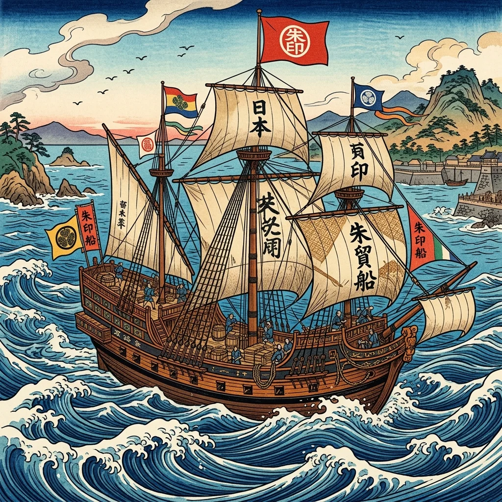
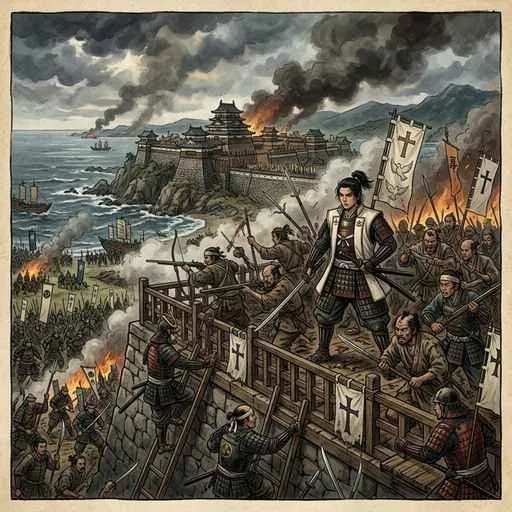

17. 外交政策の確立と「鎖国」の完成
江戸時代のはじめ、日本は東南アジアと活発に取引を行っていましたが、幕府は次第にキリスト教の広まりを警戒するようになりました。今回は、幕府がどのようにしてキリスト教を禁止し、オランダなどの国以外の国との交流を制限した「鎖国（さこく）」を完成させたのか、また鎖国下でも機能していた「四つの外交ルート」について詳しく解説します！
1. 朱印船貿易からキリスト教の禁止へ
江戸幕府を開いた徳川家康は、海外貿易による大きな利益に目をつけ、当時は積極的な貿易を推奨しました。
① 朱印船貿易（しゅいんせんぼうえき）
家康は、大名や大商人に海外渡航を許可する公式な証明書である「朱印状（しゅいんじょう）」を発行しました。この朱印状を持った船による貿易を朱印船貿易（しゅいんせんぼうえき）と呼びます。
朱印船は東南アジア各地（ルソン、シャム、カンボジアなど）へ渡り、現地で貿易を行いました。多くの日本人が現地に移り住んだことで、各地に日本人による自治街である「日本町（にほんまち）」がつくられました（タイで活躍した山田長政などが有名です）。

図1：家康が発行した朱印状を掲げ、東南アジアへと海を渡った「朱印船」のイメージ
② キリスト教禁止の理由
しかし、幕府は以下の理由からキリスト教を厳しく禁止する方針へと舵を切りました。
- 「神のもとでは人は皆平等である」という教えが、幕府の作った厳しい身分支配（士農工商）の邪魔になること。
- キリスト教の信者（キリシタン）たちが強く団結し、幕府に対して反乱を起こすおそれがあったこと。
- キリスト教を広めるスペインやポルトガルが、最終的に日本を武力で征服・環境地化（植民地化）するのではないかと警戒したこと。
幕府は1612年（直轄領）、および1613年（全国）にキリスト教禁止令（禁教令）を出し、キリスト教の信仰を固く禁じました。
2. 島原・天草一揆とキリシタンの抵抗
キリスト教への迫害と、領主による過酷な年貢の取り立てに耐えかねた九州のキリシタンたちが、ついに蜂起しました。
① 島原・天草一揆（1637年）
1637年、島原（長崎県）と天草（熊本県）の領民たちが団結し、約3万7000人規模の大反乱を起こしました。これが島原・天草一揆（しまばらあまくさいっき）です。この一揆のリーダーとして立てられたのが、まだ16歳ほどの少年であった天草四郎（あまくさしろう／益田時貞）でした。彼らは廃城となった原城に立てこもり、幕府軍を相手に約4ヶ月も激しく戦いましたが、最後は兵糧攻めにあい鎮圧されました。

図2：一揆の精神的支柱となり、最後まで原城で戦った「天草四郎」のイメージ
② キリシタンをあぶり出す手段
一揆の激しさに衝撃を受けた幕府は、キリスト教徒を徹底的に排除するため、以下の政策を全国で行いました。
- 絵踏（えふみ）：イエスや聖母マリアが描かれた金属や木製の板（踏み絵）を人々に踏ませ、踏むのをためらう者をキリシタンとして処罰・強制改宗させました。
- 宗門改（しゅうもんあらため）：すべての人々を、いずれかの仏教の寺の檀家（信者）として登録させ、キリシタンではないことを証明させました（寺請制度）。
3. 「鎖国（さこく）」の完成と出島
幕府はキリスト教の侵入を防ぎ、さらに貿易の利益を幕府が独占するため、対外関係の制限を段階的に進めました。
- 1635年：日本人の海外渡航と、海外にいる日本人の帰国を完全に禁止。
- 1639年：キリスト教を広めようとするポルトガル船の来航を禁止（実質的な「鎖国の完成」）。
- 1641年：長崎の平戸にあったオランダ商館を、長崎に作った人工の島である出島（でじま）に移しました。
これにより、日本との直接交流を許されたヨーロッパの国はオランダのみとなりました。出島ではオランダ人や中国（清）との交易が厳しく制限されながら行われ、貿易の港は長崎に限定されました。この体制を「鎖国（さこく）」と呼びます。
4. 鎖国中の「四つの外交窓口」
日本は完全に海外とシャットアウトしていたわけではなく、以下の「四つの窓口（ルート）」を通じて外交や貿易を行っていました。テストでは、この四つの窓口と相手国が非常によく出題されます！
① 長崎口（ながさきぐち）［幕府直轄］ ➔ オランダ・清（中国）
長崎の出島でオランダ、唐人屋敷で清と貿易を行いました。幕府はオランダ商館長から海外の情報が書かれた「オランダ風説書（オランダふうせつがき）」を提出させ、海外の情報（西洋の動きなど）を独占的に把握していました。
② 対馬口（つしまぐち）［対馬藩・宗氏] ➔ 朝鮮国
長崎とは異なり、対馬藩（長崎と韓国の間）の宗（そう）氏が仲介して、朝鮮国との間で正式な国交を結んでいました。将軍が新しく代わるごとに、朝鮮からお祝いの使節である朝鮮通信使（ちょうせんつうしんし）が来日し、江戸までの街道で盛大なパレードが行われました。
③ 薩摩口（さつまぐち）［薩摩藩・島津氏] ➔ 琉球王国
薩摩藩（鹿児島）が1609年に琉球王国に軍隊を送り込み、実質的に支配下に置きました。琉球王国は清とも朝貢（服従）関係を続けていたため、幕府は琉球を通じて中国の情報を得ていました。将軍の代替わりなどには、琉球から江戸へ使節が派遣されました。
④ 松前口（まつまえぐち）［松前藩・松前氏] ➔ アイヌ民族（蝦夷地）
松前藩（北海道南部）が、北海道に住むアイヌ民族との交易の権利を独占しました。松前藩はアイヌに対して不公平な取引（少ない米と大量の鮭や毛皮を交換するなど）を強いたため、1669年にアイヌの指導者であるシャクシャインが立ち上がり、大規模な戦いであるシャクシャインの戦いが起きましたが、最終的に松前藩によって鎮圧されました。
🔥 この単元のテスト対策・暗記のコツ
-
★
島原・天草一揆（1637年）の首謀者と原因：
・首謀者は天草四郎。
・原因：「領主による過酷な年貢の取り立て」と「キリスト教への激しい迫害」の二つを記述できるようにしておきましょう。 -
★
絵踏と宗門改の言葉の区別：
・踏み絵を踏ませる行為は絵踏。
・宗派を調べさせて寺の檀家として登録させる制度は宗門改。言葉の使い分けに注意してください。 -
★
鎖国の完成年（1639年）：
・「広く（1639）鎖国を完成する」と覚えます。ポルトガル船の来航が禁止された年です。オランダ商館を出島に移したのはその後の1641年です。 -
★
四つの外交窓口の対応表（絶対暗記！）：
・長崎 ➔ オランダ・清（オランダ風説書）
・対馬 ➔ 朝鮮国（朝鮮通信使）
・薩摩 ➔ 琉球王国（中継ぎ）
・松前 ➔ アイヌ民族（シャクシャインの戦い）